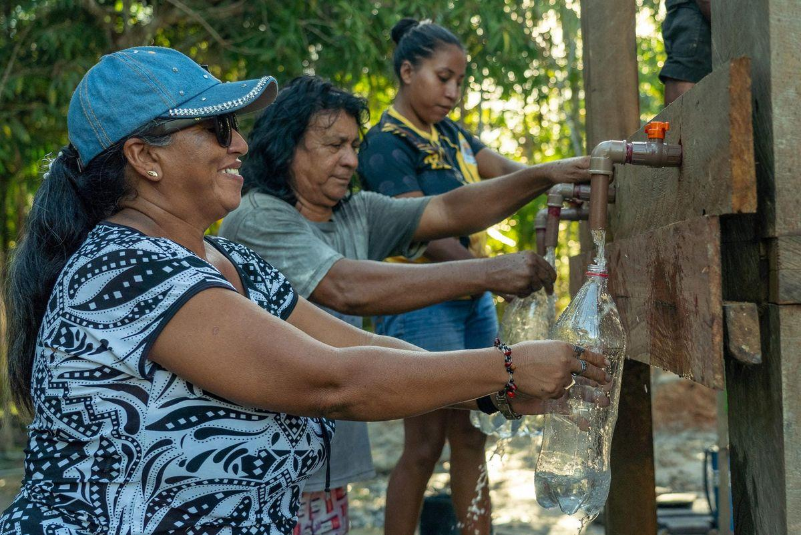
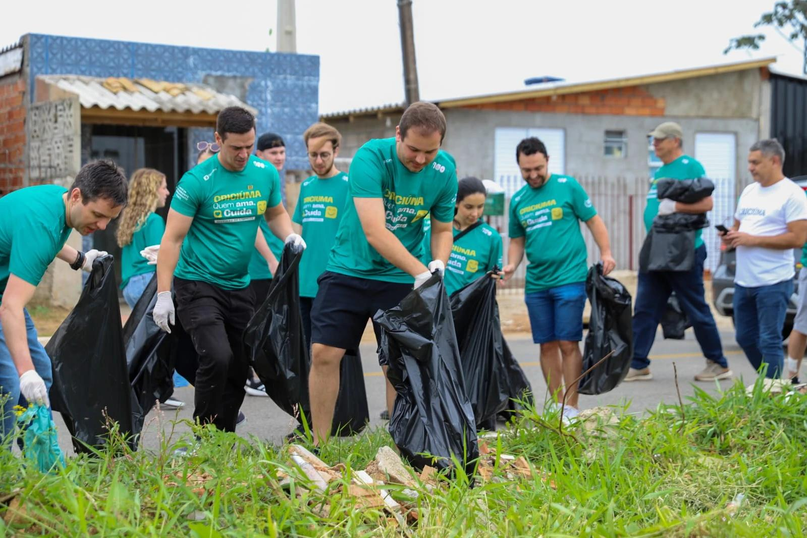

Nossas iniciativas
Projetos ambientais
Água para Todos
O projeto Água para Todos tem como objetivo contribuir para o acesso à água potável em comunidades que enfrentam dificuldades com infraestrutura e abastecimento. Por meio de ações comunitárias, conscientização e apoio na melhoria das condições locais, o Planeta em Foco busca promover mais qualidade de vida e dignidade para as famílias.


Comunidade Limpa
O projeto Comunidade Limpa nasceu para transformar espaços que sofrem com o descarte irregular de resíduos e a falta de cuidados com o ambiente. Através de mutirões de limpeza, conscientização e participação dos moradores, o Planeta em Foco trabalha para recuperar áreas públicas e incentivar hábitos mais sustentáveis.

